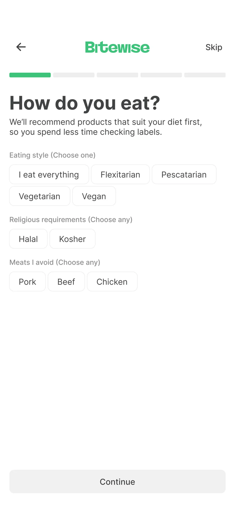
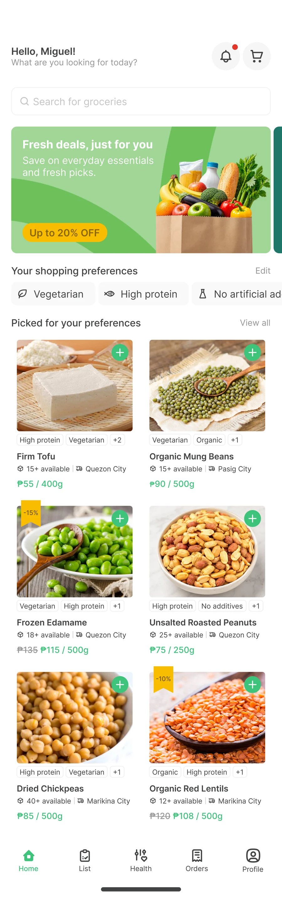
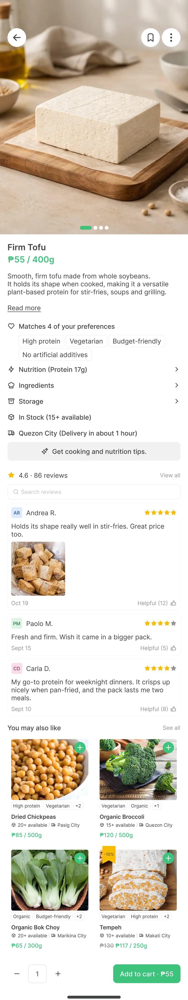
BiteWise is a mobile grocery shopping concept designed for busy individuals with dietary needs, food preferences, and nutrition goals. It explores how personalized product discovery can make it easier to find, evaluate, and purchase groceries that fit individual needs.
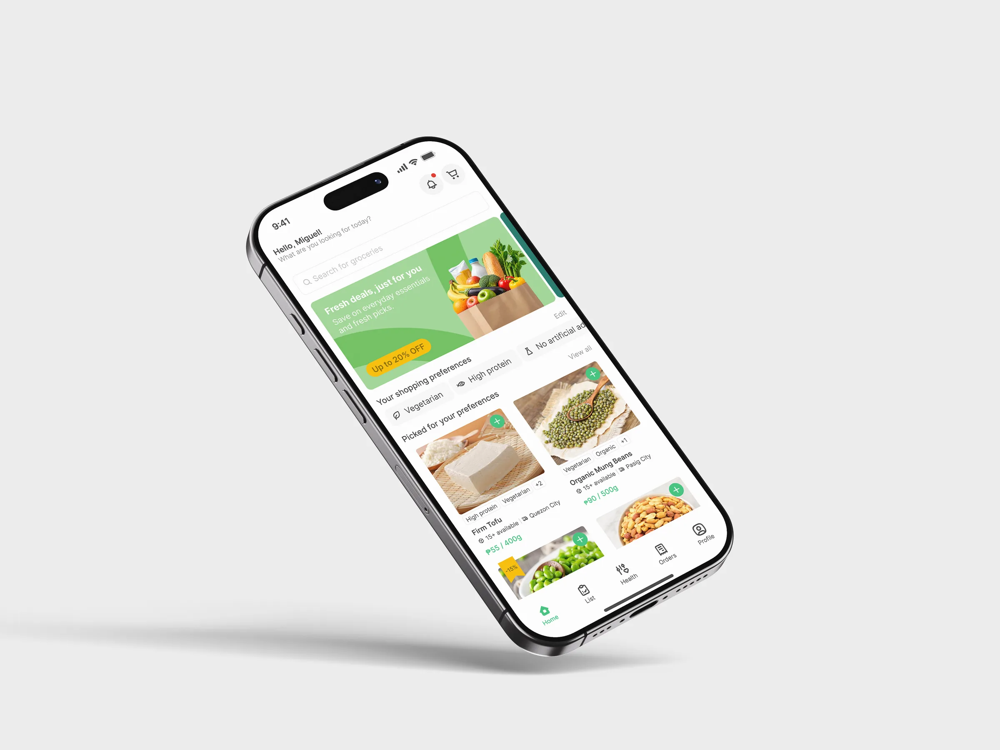
Shoppers with dietary needs often spend extra time checking ingredients, nutrition, and product suitability. For busy individuals, comparing products can make grocery shopping more time-consuming.
I reviewed three grocery shopping apps to understand how they support shoppers with specific dietary needs. They covered the basics, but left dietary needs to the shopper.
Filters focused on general categories, leaving shoppers to identify suitable products themselves.
Product pages lacked ingredients, allergens, and nutrition, making suitability harder to evaluate.
Shoppers navigated between product pages to compare information, adding effort.
Each gap from the review became a principle that the screens had to answer.
Allow shoppers to communicate their dietary needs and preferences instead of repeatedly searching for suitable products.
Help shoppers narrow their choices by presenting products aligned with their selected preferences.
Provide clear product information so shoppers can evaluate suitability before purchasing.
How might we help busy individuals discover and evaluate groceries that match their dietary needs, food preferences, and nutrition goals?
I structured the BiteWise experience around communicating preferences, discovering relevant products, and making informed purchasing decisions.
Fresh greens for food and confirmation, yellow reserved for deals, and neutral surfaces that keep product photos in front.
Bold for screen titles, medium for product names, regular for descriptions and labels.
Shoppers have different dietary needs and shopping priorities, making it difficult to find groceries that fit their requirements.
A guided onboarding flow that collects dietary preferences, allergies, nutrition goals, and shopping priorities such as affordability, convenience, and product sourcing.
Collecting these preferences upfront provides a foundation for a more relevant shopping experience based on what matters to each shopper.
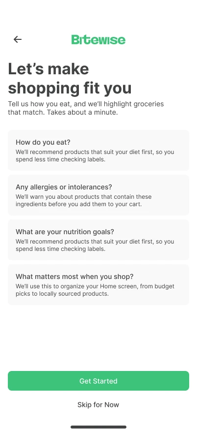
01WelcomeSets expectations: about a minute.
02DietEating style, religious needs, meats to avoid.
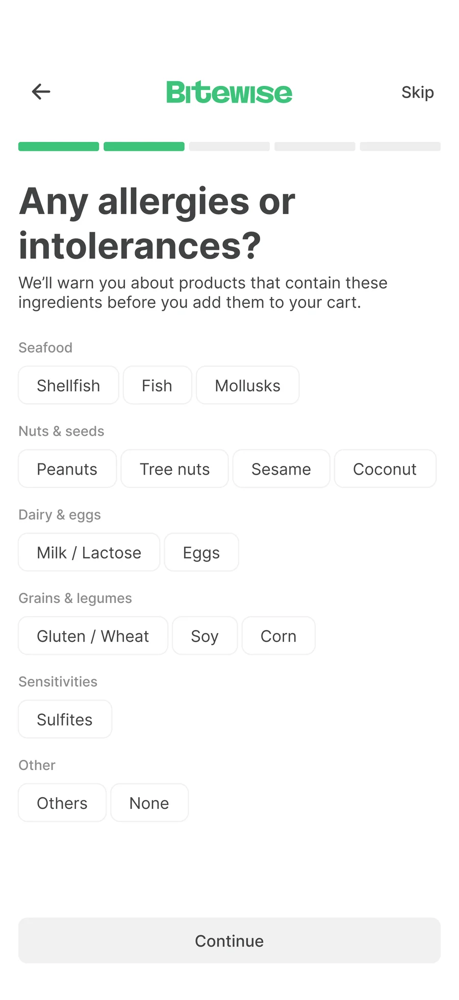
03AllergiesGrouped by food type, so they are quick to find.
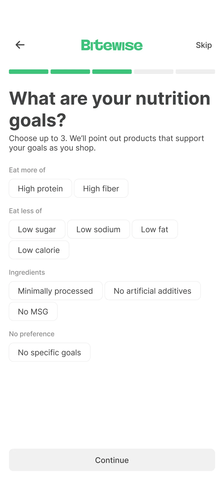
04NutritionUp to three goals, to keep it focused.
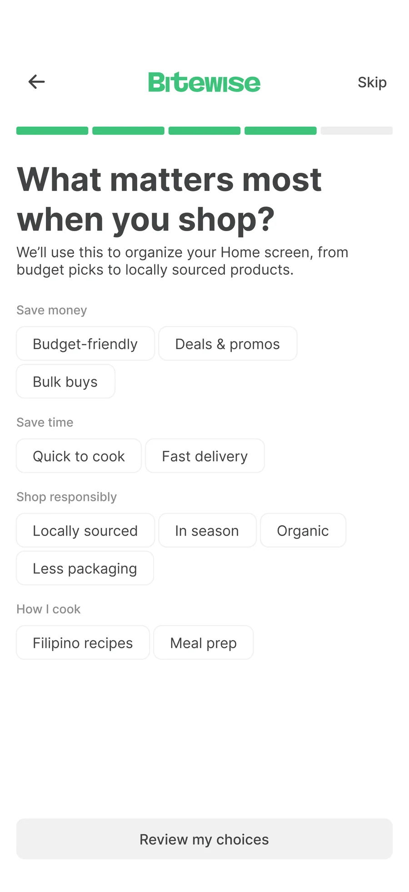
05PrioritiesMoney, time, sourcing, and cooking style.
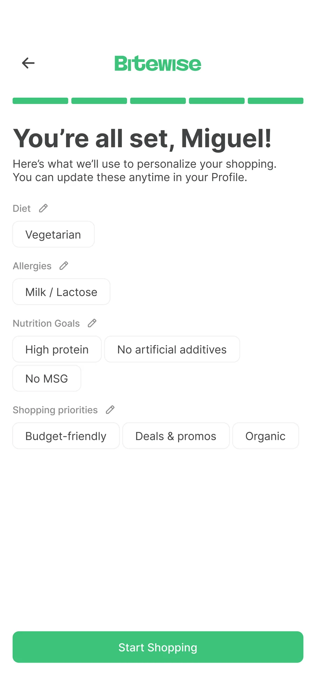
06SummaryEverything editable later in Profile.
Standard grocery listings require shoppers to manually identify products that match their dietary needs and shopping priorities.
A personalized home screen displaying relevant groceries with dietary tags, availability information, prices, and promotional indicators.
Combining dietary relevance with practical shopping information helps shoppers compare suitable products while considering their budget and preferences.
Promotions sit beside relevance, not instead of it.
The shopper's own needs head the screen, one tap from editing.
Diet tags, stock and delivery city, before opening the product.
Discount badges and price drops for budget-minded shoppers.
Suggestions before typing, matching names while typing, and results that keep the same dietary tags, with quick filters on top.
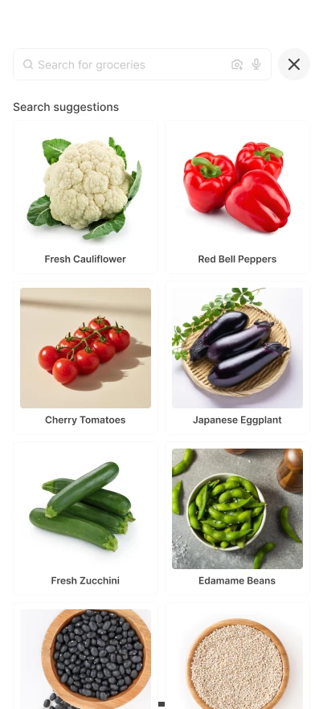
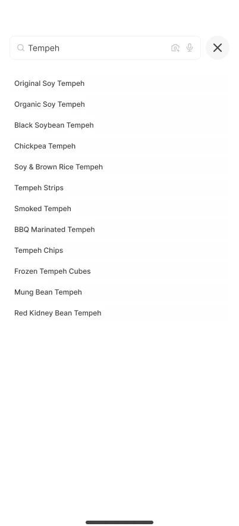
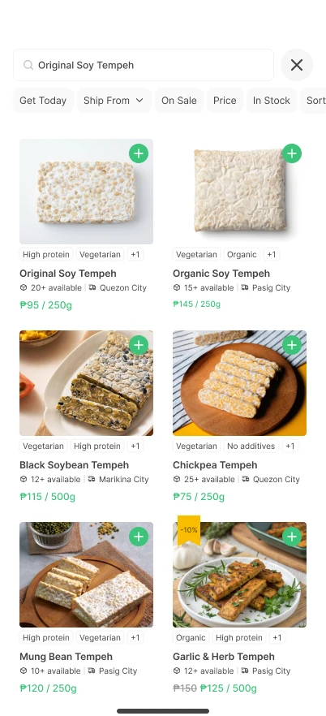
Shoppers need enough information to evaluate a product before adding it to their order.
A product details screen presenting ingredients, nutritional information, and reviews, an Ask Wise assistant for cooking and nutrition questions, followed by the checkout screen.
Providing dietary information and on-demand guidance before purchasing supports more informed product selection, while checkout organizes the final order review.
Matches at a glanceHow many of the shopper's preferences the product meets, and which.
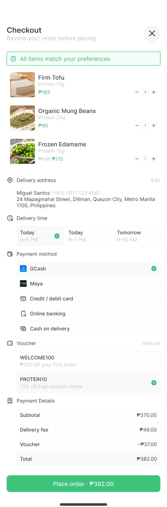
Ask WiseCooking ideas and nutrition answers, without leaving the product.
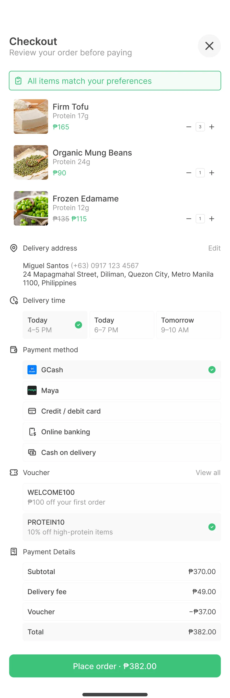
A last checkCheckout confirms every item still fits the shopper's preferences.
BiteWise reinforced the importance of designing connected experiences rather than isolated screens.
BiteWise is a personal concept informed by course-provided personas and an exploratory review of existing grocery apps. Its assumptions and proposed experience have not yet been validated with users.
Assessing how easily shoppers navigate onboarding, discovery, and checkout.
Evaluating whether personalized product options match shoppers' dietary needs.
Identifying missing information or difficulties when evaluating products.
Full case study at jaybeniza.vercel.app/bitewise